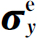

ω。所以我们所要的一组振幅为
ω。所以我们所要的一组振幅为在这一章中，我们来着手讨论氢的“超精细分裂”问题，因为这是一个我们已经能够用量子力学处理的、物理学中有兴趣的例子。这是一个具有两个以上的态的例子，可以用它说明量子力学应用到稍为复杂一些问题上的方法。这个问题也足够复杂，你懂得了处理它的方法后就能立即推广到各种问题上去。
如你们所知，氢原子包含有一个位于质子附近的电子，它可以处于许多分立的能量状态中的任何一个状态，在每一个能量状态中电子的运动图式都不相同。例如，第一激发态位于基态之上3/4里德伯能量，或者大约10eV处。但是由于电子和质子都具有自旋，即使是氢的所谓基态，其实也不是具有单一的确定能量的态。正是它们的自旋造成了能级的“超精细结构”，将所有的能级都分裂成几个靠近的能级。
电子可以具有或者“朝上”或者“朝下”的自旋，质子的自旋也可以“朝上”或者“朝下”。因此，原子的每一种动力学条件下都存在着4种可能的自旋态。这就是说，当人们谈到氢原子的“基态”时，实际上是指这“4个基态”，而不是指能量最低的态。这4种自旋态并不都具有完全相同的能量，它们对于无自旋时的能量稍有移动。但是与基态到第一激发态之间10eV左右的能量差相比这种能量的移动是非常非常小的。因此，每个动力学状态的能级都分裂成一组彼此非常靠近的能级，这就是所谓的超精细分裂 。
这4个自旋态之间的能量差就是我们在本章中要计算的。超精细分裂是由电子和质子磁矩之间的相互作用引起，这种相互作用对于各个自旋态给出稍微不同的磁能。这些能量移动大约只有10－7 eV——与10eV相比实在是太小了！正因为能级之间有很大的差距，所以我们把氢原子的基态看作是一个“四态”系统，而不必为实际上有很多更高能量的状态这一事实操心。这里我们只限于研究氢原子基态的超精细结构。
就我们的目的而言，我们对电子和质子空间位置 的细节丝毫不感兴趣，因为它们的位置由原子结构决定——原子进入基态本身就决定了它们的位置。我们需要知道的只是电子和质子以某种确定的空间关系彼此靠近。此外，它们的自旋可以有多种不同的相对取向。我们要研究的只是自旋的效应。
我们一定要回答的第一个问题是：这系统的基础态 是什么？但这个问题表述不正确。没有规定的基础态，因为你们可选取的基础态组不是唯一的。将老的一组线性组合就可以构成新的一组。基础态总是有多种选择，这些选择都同样的合法。所以问题并不是这组基础态是什么，而是什么可以作为基础态。我们可以按我们的方便选取想要的任何一组基础态。通常最好以一组物理意义 最明确的基础态作为开始。它可能不是任何问题的解，也可能不具有任何直接 的意义，但它一般会使产生的物理现象易于理解。
我们选择下列4个基础态：
态1 ：电子和质子的自旋都“朝上”，
态2 ：电子自旋“朝上”，质子自旋“朝下”，
态3 ：电子自旋“朝下”，质子自旋“朝上”，
态4 ：电子和质子的自旋都“朝下”。
对于这4个态，要有一种简便的记法，为此，我们将用下面这种方式来表示它们：
你一定得记住，第一个 ＋或－号表示电子，而第二个 则表示质子。为便于参考，我们已把这些记法总结在图12-1中。有时也把这些态方便地记为｜1〉，｜2〉，｜3〉和｜4〉。
图12-1 氢原子基态的一组基础态
你或许会说：“但是这些粒子有相互作用，可能这些态不是恰当的基础态。听起来好像你把这两个粒子看作是相互独立的。”确实如此！相互作用产生了问题：系统的哈密顿 是什么？但如何描述 这个系统并不涉及到相互作用。我们选取什么作为基础态可以不涉及到以后发生的情况。一个原子即使它一开始处于这些基础态中的一个态，它也不可能永远保持这个态。这是另外一个问题。问题是：在一个特殊（固定）基础态中的振幅如何随时间变化？选取基础态只是为我们的描述选取“单位矢量”而已。
趁讨论这个课题时，让我们来看一下在多于一个粒子的情况中如何寻求一组基础态这样一个普遍性的问题。你们已知道关于单个粒子的基础态。例如，对现实生活——不是我们这种简化的情况，而是现实生活——中的一个电子的完整描述是给出它在下列各个态中的振幅：
实际上存在两组无限多态，每个p 值一个态。这就是说，如果你们知道了所有的振幅
则一个电子的状态｜ψ 〉就被完全描述了。式中＋和－表示角动量沿某个轴——通常指z 轴——的分量，p 为动量矢量。因此，对每个可能的动量，必定存在两个振幅（一组多重无限基础态）。对单个粒子的描述就是这些。
当存在一个以上粒子时，其基础态可用类似的方式写出。例如，若有一个电子和一个质子处在比我们考虑的更为复杂的情况下，其基础态可能是如下的类型：
｜一个自旋“朝上”、以动量p 1 运动的电子和一个自旋“朝下”、以动量p 2 运动的质子〉。其他自旋组合以此类推。如果存在两个以上的粒子——同样的思路。所以，你们看到，要写出可能的 基础态实际上是很容易的。唯一的问题是：哈密顿是什么？
就研究氢原子基态而言，我们不需要用到全部不同动量的基础态。当我们说“基态”时，我们是指特定的质子和电子的动量状态。组态——所有动量基础态的振幅——的细节是可以计算的，但这是另一个问题。现在所关心的只是自旋效应，因此可只取式（12.1）的4个基础态。接下来的问题是：对于这组基础态的哈密顿是什么？
我们马上就来回答这个问题。但首先应提醒你们一件事：任何 态总能够写成基础态的线性组合。对于任何一个态｜ψ 〉我们可以写成
请记住，完整的括号只不过是复数，所以我们也可以把它们写成常用的形式C i ，其中i ＝1，2，3或4，因而式（12.2）可以写成
只要给出了4个振幅C i ，我们就能完整地描述自旋态｜ψ 〉。如果这4个振幅随时间而变化，事实上也是如此，则它们的时间变化率由算符 给出。于是，问题在于找出 。
如何写出一个原子体系的哈密顿并没有一个普遍的规则可循，而找到一个正确的公式比起找到一组基础态来更需要技巧。我们可以告诉你们一个普遍规则，据此可写出任何关于一个电子和一个质子问题的一组基础态，但是在目前的水平上要去描述这种组合的一般的哈密顿却是太难了。因此，我们将通过某种启发式的论证给你们导出一个哈密顿，而你们一定要承认它是正确的哈密顿，因为用它所得出的结果与实验观察一致。
你们应记得，在上一章中我们可以用σ 矩阵——或与之完全等价的σ 算符——来表示单个自旋1/2粒子的哈密顿。这些算符的性质概括在表12-1中。这些算符——它们只是表述〈＋｜σ z ｜＋〉这种类型的矩阵元的一种简略而方便的方式——适用于描述自旋1/2的单个 粒子的行为。问题是：我们是否能找到一种类似的记号来描述具有两个自旋粒子的体系？答案是肯定的，而且非常简单，具体如下。我们发明一种称之为“σ 电子”的东西，用矢量算符σ e 来表示，它具有x ，y 和z 的分量 。现在我们作出一个约定 ，当这些算符中任何一个作用到氢原子的4个基础态之一时，它只作用于电子 的自旋，而且其作用完全像电子单独存在时一样。例如， 是什么？由于σ y 作用于“朝下”电子得出－i乘以相应的电子“朝上”的态，即
（当 作用于组合态时，它使电子的自旋倒转，而对质子不起作用，再对结果乘以－i。） 作
表12-1
用于其他的态给出
要记住算符σ e 只作用于第一个 自旋符号——即作用于电子 的自旋。
接着，我们定义质子的自旋相应的“σ 质子”算符。它的3个分量 的作用方式与σ e 相似，只作用在质子 自旋上。例如，如果我们把 作用于4个基础态的每一个上，我们得到——仍旧利用表12-1——
你可以看到，这并不很困难。
在最一般的情况下，事情可能更复杂一些。例如，我们可能有像 这样的两个算符的乘积。当我们碰到这种乘积的运算时，我们先作右边算符的运算，然后再作另一个算符的运算 (1) 。例如，我们有
注意这些算符对纯数没有任何作用——我们在写出 时就利用了这一事实。我们说这些算符与纯数“对易”，或者说一个数“可以移到算符另一边”。作为练习。你可以证明一下乘积 对4个基础态给出下列结果：
如果我们取所有可用的算符，每一种算符仅用一次，则有16种可能性。是的，16种 ——倘若我们把“幺正算符” 也包括进去。首先是3个： 。然后是 和 3个，总共有6个。此外，还有9个 这种形式的乘积，使总数达到15个。另外，还有一个使任何态不变的“幺正算符”。总共16个。
现在注意，一个4个态的系统的哈密顿矩阵必定是一个系数的4×4矩阵——它有16项。不难证明，任何一个4×4的矩阵——特别是哈密顿矩阵——都可以写成与我们刚才写出的一组算符相对应的16个双自旋矩阵的线性组合。因此，对于一个电子与一个质子之间仅仅涉及自旋的相互作用来说，我们能预期其哈密顿算符可以写成同样的16个算符的线性组合。问题仅在于如何写。
首先，我们知道相互作用不依赖于坐标轴的选取。如果没有外界扰动——如磁场之类——来确定空间的独特方向，哈密顿就不可能与我们选取的x ，y 和z 轴的方向有关。这意味着从哈密顿不应具有孤零零的 这样的项。否则用不同的坐标系将得出不同的结果，这显然是荒谬的。
唯一的可能性是含幺正矩阵的项，例如常数a （乘上 ），以及不依赖于坐标的σ 算符的某种组合——某种“不变”组合。两个矢量的唯一标量 不变组合是标积，对我们的σ 来说就是
这个算符对坐标系的任何转动都是不变式。所以具有特定的空间对称性的哈密顿，只可能是一常数乘以幺正矩阵加上一个常数乘以上述标积，即
这就是我们所要求的哈密顿。只要不存在外场 ，根据空间对称性它是唯一的可能。常数项没有多大意义，它仅取决于我们选取来测量能量的起始能级。我们完全可以取E 0 ＝0。第二项才告诉我们求氢原子能级分裂所需知道的一切。
要是你愿意的话，你可以不同的方式来考虑这哈密顿。如果有两个磁矩为μ e 和μ p 且彼此靠得很近的磁体，相互作用能量依赖于μ e •μ p ——包括在其他各种能量中。而且你记住，我们曾发现经典的μ e 在量子力学中以μ e σ e 的形式出现。同样，经典理论中的μ p 通常在量子力学中表示为μ p σ p （这里μ p 是质子的磁矩，它比μ e 约小1000倍，且符号相反）。所以式（12.5）表明相互作用能和两个磁体之间的相互作用能相同——不过不是完全相同，因为两磁体之间的相互作用能取决于它们之间的径向距离。但是式（12.5）是——并且事实上也确实是——某种平均相互作用能。电子在原子内部各处运动，我们的哈密顿只给出平均相互作用能。总之，按照经典物理学，对于在空间以一定方式排列的电子和质子之间有一个正比于这两个磁矩之间夹角余弦的能量。这种经典的定性图像也许会帮助你们理解它的来源，但是重要的是，式（12.5）是正确的量子力学公式。
两磁体间经典相互作用能的数量级是两磁矩的乘积除以它们之间距离的立方。氢原子内电子与质子间的距离，粗略地说，为原子半径的一半，即0.5Å。因此我们可以作一个粗略估计：式中的常数A 大致应等于两个磁矩μ e 和μ p 的乘积除以0.5Å的立方。这种估计所给出的数值还是可以的。当你们了解了氢原子全部量子理论——至今我们还没有讲到——就知道可以准确地算出A 。实际上计算精确度已达到大约百万分之三十。所以，与氨分子的翻转常数A 不同，它还不能由理论很好地计算出来，而氢的常数A 可以 由更为精确的理论算得。不过没关系，为了目前的目的，我们把A 看作是一个能由实验确定的数，然后分析这种情况的物理意义。
取式（12.5）的哈密顿，我们可以将它和方程
一同用来求出自旋相互作用对能级的影响。为此，我们需要找出与式（12.1）的4个基础态中每一对相对应的16个矩阵元H ij ＝〈i ｜H ｜j 〉。
我们先对4个基础态中的每一个求出 ｜j 〉。例如，
利用稍早一些时候讲过的方法——如果已记住表12-1的话，就很容易了——我们求出每对σ 作用于｜＋＋〉的结果。答案为
所以式（12.7）变为
因为我们的4个基础态都是互相正交的，立即可得
由于〈j ｜H ｜i 〉＝〈i ｜H ｜j 〉* ，我们已经能够写出振幅C 1 的微分方程：
就这些！我们仅得到一项。
表12-2 氢原子的自旋算符
为了获得哈密顿方程中的其余项，我们必须用相同的步骤把 作用到其他态上去。首先，作为练习，请你核对一下我们在表12-2中写出的所有σ 的乘积，然后我们可以利用它们得出
然后依次对每一项在左边乘上所有其他的态矢量，我们就得到如下的哈密顿矩阵H ij
当然，这意思仅仅是表明4个振幅C i 的微分方程为：
在解这些方程之前，我们忍不住要告诉你们一个由狄拉克得出的巧妙规则——它将使你们感到自己真正获得了很大的进步——虽然我们现在的工作并不需要它。由方程式（12.9）及（12.12），我们得到
请看，狄拉克说：我也可以把第一和最后的方程写成
于是这4个方程就十分相像了。现在我发明一个新的算符，我称它为P 自旋交换 ，并且定义 它有如下性质 (2) ：
该算符的作用是交换两个粒子的自旋方向。这样，我就可把式（12.15）中的全部方程写成一个简单的算符方程：
这就是狄拉克的公式。他的“自旋交换算符”提供了一个演算σ e •σ p 的简便规则。（你们看现在你们什么都可以做了。大门打开了。）
现在我们已准备就绪，可以通过解哈密顿方程式（12.14）来算出氢原子基态的能级了。我们要求定态的能量。这就是说我们要找到那些特定的状态｜ψ
〉，对它们来说，属于｜ψ
〉的一组振幅C
i
＝〈i｜ψ
〉的每一个均有相同的时间依赖关系——即e－iωt
。这个态具有能量E
＝
ω。所以我们所要的一组振幅为
式中4个系数a
i
与时间无关。为了看出能否获得这组振幅，我们把式（12.17）代入方程式（12.14），看看有何结果。方程式（12.14）中的每个i
dC
/dt
变为EC
，并且——消去共同的指数因子后——各个C
都变成了a
，我们得到：
我们从这些方程解出a 1 ，a 2 ，a 3 和a 4 。正好第一个方程与其他方程无关——这意味着我们立即可以看出一个解。若我们取E ＝A ，则
是一个解。（当然，若取所有a 的值均为零也是一个解，但这表示根本没有任何态存在。）让我们把这第一个解称为态｜Ⅰ〉 (3) ：
它的能量为
有了这一线索，你们立即可从式（12.18）中最后一个方程看出另一个解：
我们称该解为态｜Ⅱ〉：
现在要稍微困难些了，式（12.18）中余下的两个方程是混合的。但是以前我们也碰到同样的情况。将此两式相加，我们得到
将两式相减，得
通过观察——并回忆氨的情况——我们看到存在两组解：

它们是｜2〉和｜3〉的混合物。把这两个态称为｜Ⅲ〉和｜Ⅳ〉，并乘上一个因子 ，使这两个态归一化，我们得到
及
我们得出了4个定态及其能量。顺便提一下，注意到这4个态是相互正交的，所以如果我们愿意，也可以把它们作为基础态。我们的问题完全解决了。
上述4个态中3个态的能量为A ，而第4个态的能量为－3A 。其平均能量为0——这意味着如果我们在式（12.5）中取E 0 ＝0，就是我们选择以平均能量为基准来量度所有能量。我们可以把氢原子基态能级图画在图12-2中。
图12-2 氢原子基态的能级图
态｜Ⅳ〉与其他任何一个态之间的能量差为4A
。一个处于态｜Ⅰ〉的原子，可能从该态落至态｜Ⅳ〉并发光。但不是光学光子，因为能量太小了——它将发射出一个微波量子。或者，若用微波照射氢气，当处在态｜Ⅳ〉的原子获得能量，并跃迁至上能态时，我们将发现能量的吸收——但只吸收频率ω＝4A
/
。这个频率已经由实验测得，最近所得到的最好结果
(4)
为：
其误差仅为一千亿分之二！大概没有一个基本物理量测得比它还精确的了——它是物理学中最最精确的测量之一。理论家对于他们能把能量计算到3/105 的准确度感到非常高兴，而此时它却被测量至2/1011 的准确度——比理论准确100万倍。所以实验物理学家大大领先于理论家。在氢原子基态理论方面，你已不比别人差。你也完全可以从实验中求得自己的A 值，这也是每个人最后必须做的工作。
你以前大概已听说过氢的“21cm谱线”这件事吧，这就是氢的两个超精细态之间1420兆周谱线的波长。星系中的氢原子气体发射或吸收这一波长的辐射。所以用调谐至21cm波（或约1420MHz）的射电望远镜，我们就能观察氢原子气体浓集处的位置和速度。通过强度的测量，我们可以估计氢的数量；从测量多普勒效应引起的频移，我们可以求出星系中气体的运动情况。这是射电天文学的宏大计划之一。所以我们现在谈论的是完全真实的事情——它并不是一个臆造的问题。
虽然我们已经完成了求氢原子基态能级的问题，但是我们还要再进一步研究这一有趣的系统。为了对此系统有更多的了解——例如，为了计算氢原子吸收和发射21cm的射电波的速率——我们必须知道原子受到扰动时发生的情况。我们要照我们求解氨分子那样去做——在求出能级后进一步研究氨分子在电场中的情形。于是我们就能够计算出射电波的电场所产生的效应。对氢原子来说，电场除了使所有的能级都移动一个与电场的平方成正比的常量外，别无作用——由于它并不改变能量差，故不必注意。现在重要的是磁场 。所以接下来就是要写出原子处在外磁场中这种更为复杂的情况的哈密顿。
那么哈密顿是什么呢？这里我们只告诉你们答案，除了说原子的行为就是这样外不再给你们任何“证明”。
哈密顿为
它由三部分组成。第一项A σ e •σ p 表示电子和质子间的磁相互作用——即使没有磁场也同样有这一项。这是我们原来就有的项；磁场对常数A 的影响可忽略不计。外磁场的影响反映在最后两项中。第二项－μ e σ e •B ，是电子单独处于外磁场中具有的能量 (5) ，同样，最后一项－μ p σ p •B 是质子单独存在于磁场中具有的能量。在经典理论中两个粒子共同的总能量是它们两个的能量之和，在量子力学中也同样如此。在磁场中，由于磁场所产生的相互作用能，就是电子同外磁场的相互作用能与质子同外磁场的相互作用能之和——两者都用σ 算符来表示。在量子力学中，这些项并不真正是能量，但是按经典的能量公式去想象它们是记住写出哈密顿规则的一种方法。不管怎样，式（12.27）是正确的哈密顿。
现在我们必须回到起点，再从头来解这一问题。但是有许多工作已经完成了——我们只需把新的项产生的效应加进去，我们令恒定磁场B 沿z 方向，于是必须在我们的哈密顿算符中加进两个新的项——我们可以称之为 ：
利用表12-1，我们立即得到
多么方便！ 作用于每个态只是得到一个数乘以这个态。因此，矩阵〈i ｜H ′｜j 〉只有对角元 ——我们只要直接把式（12.28）中的系数加到式（12.13）中相应的对角项上去，于是哈密顿方程式（12.14）变为：
方程的形式并没有什么不同——只是系数不同而已。只要B 不随时间变化，我们就可以继续照以前那样去做。将 代入，我们得到——式（12.18）的变形——
很巧，上式中第一和第四个方程仍旧与其他方程无关，所以我们仍可用同样的技巧求解。
态｜Ⅰ〉是一个解，对于这个解a 1 ＝1，a 2 ＝a3 ＝a4 ＝0，或
在剩下的两个方程中，因为系数a 2 和a 3 不再相等，所以稍微复杂些。但是它们和我们曾得到过的氨分子的一对方程很像。回顾一下式（9.20），我们就能作出如下类比（记住那里的指标1和2相当于这里的2和3）
于是能量由式（9.25）给出，它们是
将式（12.33）代入上式，能量表式就成为
虽然我们在第9章中把这两个能量称为E Ⅰ 和E Ⅱ ，而在目前的问题中我们把它们称为E Ⅲ 和E Ⅳ ，
所以我们就找到了氢原子处在恒定磁场中的4个定态的能量。让我们令B 趋向于零以核对上述结果是否与上节所得的能量相同。你们就可以看到我们会得到预期结果。当B ＝0时，能量E Ⅰ ，E Ⅱ 和E Ⅲ 等于＋A ，而E Ⅳ 等于－3A 。甚至态的标号也和以前的一致，可是当加上磁场时，各项能量以不同的方式改变。让我们来看看它们如何变化。
首先，我们必须记住，电子的μ e 是负值，质子的μ p 为正值，而且μ e 约比μ p 大1000倍。所以μ e ＋μ p 和μ e －μ p 都是负数，且接近相等。让我们把它们称为－μ 和－μ ′：
（这里μ 和μ ′两者都是正数，差不多等于μ e 的大小——约为一个玻尔磁子。）于是我们的4个能量分别为
能量E Ⅰ 从A 开始，随B 线性增加——斜率为μ 。能量E Ⅱ 也是从A 开始，但是它随B 的增加而线性地减少——其斜率为－μ 。这两个能级随B 的变化情况如图12-3所示。我们还在图中画出了能量E Ⅲ 和E Ⅳ 。但它们与B 的依赖关系不同。当B 很小时，它们依赖于B 的平方，所以开始时其斜率是水平的，然后变成曲线，当B 很大 时，它们趋近于斜率为±μ ′的直线，该直线的斜率与E Ⅰ 和E Ⅱ 的斜率几乎相等。
图12-3 在磁场B 中氢的基态能级图
由于磁场而引起的原子能级的移动称为塞曼效应 。我们说，图12-3中的曲线表示氢原子基态的塞曼分裂 。当不存在磁场时，我们仅得到氢超精细结构的一条谱线。态｜Ⅳ〉与其他任何一个态之间的跃迁，会吸收或发射一个光子，其频率1420兆周为1/h 乘以能量差4A。但是，当原子处在磁场B 中时，则有更多的谱线。4个态中任何两个态之间的跃迁都是可能的。所以如果在所有4个态上都有原子，则在图12-4中6个垂直的箭头所示的任何一个吸收或发射能量的跃迁都可能发生。这其中的许多跃迁都可以用我们在第2卷§35-3所叙述的拉比（Rabi）分子束技术观察到。
图12-4 在特定磁场B 中氢的基态能级之间的跃迁
引起这种跃迁的原因是什么呢？如果我们在稳定的强磁场B 中再加上一个随着时间变化的小的扰动磁场，就会发生这种跃迁。就像我们把变动着的电场加到氨分子上所看到的那样。只是这里是磁场与磁矩相耦合而变的把戏。但是理论与我们计算氨时所用的方法相同。如果我们在xy 平面内转动微扰磁场则理论将最简单——虽然任何水平的振动磁场都行。你把这个微扰磁场作为附加项加到哈密顿中去，就得到振幅随时间变化的解——正如我们在讨论氨分子时所求得的那样。所以你可以很容易地精确计算出从一个态到另一个态的跃迁概率。你会发现它们与实验完全一致！
现在我们要讨论图12-3中曲线的形状。首先，对于强磁场情况下的能量是易于理解的，而且相当有趣。当磁场B 足够强时（即 ），我们可以忽略式（12.37）中的1。这4个能量变为
这就是图12-3中4条直线的方程式。我们可以用下述方式去理解这些能量的物理意义。磁场为零 时定态的性质完全由两个磁矩的相互作用确定。在定态｜Ⅲ〉和｜Ⅳ〉中，基础态｜＋－〉和｜－＋〉的混合就是由于这种相互作用。但是在强的外磁场 中，质子和电子几乎一点也不受对方的场影响；它们各自都像独自处在外场中一样。于是——正如我们多次看到的那样——电子的自旋不是平行于外磁场就是与外磁场相反。
假定电子的自旋“朝上”——也就是沿着磁场方向，它的能量为－μ
e
B
。而质子仍旧可以有两种不同的方向。如果质子的自旋也是“朝上”，它的能量为－μ
p
B
。两者之和为－（μ
e
＋μ
p
）B
＝μ
B
。这正是我们所得出的E
Ⅰ
——很好，因为我们正在描述态｜＋＋〉＝｜Ⅰ〉。仍存在一个表示电子和质子自旋平行时的相互作用能的微小附加项A
（现在 ）。（原先我们取A
为正，因为我们所用到的理论表明它应该是正的，而实验证明它确是这样。）另一方面，质子的自旋也可以朝下，于是它在外磁场中的能量为＋μ
p
B
，因此它与电子能量之和为－（μ
e
－μ
p
）B
＝μ
′B
。而它们的相互作用能变为－A
。两者之和正好就是式（12.38）中的能量E
Ⅲ
。所以在强磁场中态｜Ⅲ〉必定变成态｜＋－〉。
）。（原先我们取A
为正，因为我们所用到的理论表明它应该是正的，而实验证明它确是这样。）另一方面，质子的自旋也可以朝下，于是它在外磁场中的能量为＋μ
p
B
，因此它与电子能量之和为－（μ
e
－μ
p
）B
＝μ
′B
。而它们的相互作用能变为－A
。两者之和正好就是式（12.38）中的能量E
Ⅲ
。所以在强磁场中态｜Ⅲ〉必定变成态｜＋－〉。
现在假定电子自旋“朝下”，它在外磁场中的能量为μ e B 。如果质子自旋也“朝下”，两者合在一起具有能量（μ e ＋μ p ）B ＝－μ B ，加上 它们的相互作用能A ——因为它们的自旋平行。这正好就是式（12.38）中的能量E Ⅱ ，且相应于态｜——〉＝｜Ⅱ〉——这很妙。最后，若电子自旋“朝下”而质子自旋“朝上”，我们得到能量（μ e －μ p ）B －A （相互作用能取为负 A 是因为两个自旋相反），它刚好就是E Ⅳ ，而相应的态为｜－＋〉。
“但是，等一下！”你或许会说，“态｜Ⅲ〉和｜Ⅳ〉并非 是态｜＋－〉和｜－＋〉；它们是后两者的混合。”有道理，但不全面。当B ＝0时它们的确是两者的混合态，但是我们还没有计算出它们在强磁场B 时的情况。我们在第9章中用推导（12.33）式类似的方法计算了定态能量，现在也可以用第9章的公式求相应的振幅。从式（9.24）得到
当然，比值a 2 /a 3 就是C 2 /C 3 。代入式（12.33）给出的相应的量，得

式中的E 可以采用适当的能量——EⅢ 或E Ⅳ 。例如，对态｜Ⅲ〉来说，我们有
对于强磁场B ，态｜Ⅲ〉的C 2 ≫C 3 ，该态几乎完全成了态｜2〉＝｜＋－〉。同样，如果在式（12.39）中代入E Ⅳ ，则得（C 2 /C 3 ）Ⅳ ≪1；强场中态｜Ⅳ〉正好成为态｜3〉＝｜－＋〉。你们看到构成定态的基础态的线性组合的系数与B 有关。我们称为｜Ⅲ〉的态在极弱磁场的情况下是｜＋－〉和｜－＋〉的50-50的混合态，但是在强场中就完全转移到｜＋－〉。同样，态｜Ⅳ〉在弱场中也是｜＋－〉和｜－＋〉（具有相反的符号）的50-50的混合态，但当自旋在强的外场中解耦合后态｜Ⅳ〉就趋向态｜－＋〉。
我们还特别提请你们注意在极弱磁场 下所发生的情况。有一个能级——在－3A 处——在加上弱磁场时并不发生变化。而另一个能级——在＋A 处——在加上弱磁场时分裂成3个不同的能级。对于弱场，能量随B 的变化如图12-5所示。假定我们用某种方法选出一束氢原子，它们全都具有－3A 的能量。如果我们用它们做施特恩-格拉赫实验——所用的场不太强——我们将发现它们沿直线通过实验装置。（因为它们的能量与B 无关，根据虚功原理——它们在磁场梯度中不受力的作用。）另外，假定我们选取具有能量＋A 的原子束，并使它们通过施特恩-格拉赫装置——譬如说S 装置。（同样装置中的磁场也不应太强，不影响原子的内部。也就是说磁场应足够小，使能量随B 线性变化。）我们将会发现出来的原子分成3束 。态｜Ⅰ〉和｜Ⅱ〉受到相反的作用力——它们的能量随B 以斜率±μ 作线性变化，所以该力就与作用于磁矩为 的磁偶极子的力一样。但是态｜Ⅲ〉沿直线通过。所以我们正好回到了第5章。一个能量为＋A 的氢原子是一个自旋1粒子 。这个能量状态属于一个j ＝1的“粒子”，它可以用第5章中用的3个基础态｜＋S 〉，｜0S 〉，｜－S 〉来描写——对于空间的一组轴。另一个方面，当氢原子具有能量－3A 时，它是一个自旋零的粒子。（记住，上面所说的情况仅对无限小的磁场才严格成立。）所以我们可以把零磁场下氢原子的态以下列方法归类：
图12-5 氢原子在弱磁场中的态
我们在第2卷第35章中曾说过，任何一个粒子沿任何轴的角动量分量只可能具有相差为
的某些值。角动量的z
分量J
z
可以是j
，（j
－1）
，（j
－2）
，…，（－j
）
，这里j
为粒子的自旋（可取整数或半整数）。虽然我们在这里不这么说，但人们通常写成
式中m 代表j ，j －1，j －2，…，－j 等数中的一个。所以，你们会看到，人们在书中用所谓量子数 j 和m ［j 常称为“总角动量量子数”，m 常称为“磁量子数”］来标记氢原子的4个基态。于是他们把状态表示成｜j ，m 〉。而不是写成我们的态符号｜Ⅰ〉，｜Ⅱ〉等等。所以他们把磁场为零时式（12.41）和（12.42）表示的态写用表12-3中所示的符号标记。这并不是什么新的物理，它只是记号的问题。
表12-3 在零场时氢原子的态
| 态｜j ，m 〉 | j | m | 我们的记号 |
| ｜1，＋1〉 | 1 | ＋1 | ｜Ⅰ〉＝｜＋S 〉 |
| ｜1，0〉 | 1 | 0 | ｜Ⅲ〉＝｜0S 〉 |
| ｜1，－1〉 | 1 | －1 | ｜Ⅱ〉＝｜－S 〉 |
| ｜0，0〉 | 0 | 0 | ｜Ⅳ〉 |
我们现在要用我们的氢原子的知识去解决一些特殊问题。在第5章中我们曾讨论过一个自旋1 粒子对于一特定取向的施特恩-格拉赫装置——譬如说一个S 装置——处于基础态（＋，0或－）之一，则该粒子对于不同空间取向的T 装置具有一定的振幅处于其3个态的各个态中。这样的振幅〈jT ｜iS 〉有9个，它们组成投影矩阵。在§5-7中我们未加证明地给出了T 相对S 具有不同取向时投影矩阵中的各项。现在我们将告诉你们一种能够推导出这些项的方法。
在氢原子中我们曾经有一个由两个自旋1/2粒子组成的自旋1的系统。我们在第6章中就已经解决了如何变换自旋1/2的振幅。我们可以利用这种知识去计算自旋1的变换。方法是这样的：我们有一个系统——一个能量为＋A 的氢原子——其自旋为1。假定我们让它通过一施特恩-格拉赫过滤器S ，因此我们知道它处于S 的基础态中的一个，譬如说｜＋S 〉。而它对T 装置中的某一基础态，譬如｜＋T 〉态的振幅将是什么呢？如果我们把S 装置的坐标系称为x ，y，z 系统，｜＋S〉态就是我们曾称之为｜＋＋〉的态。但是，假定另一个人把他的z 轴取在T 的轴上。他以我们称为x ′，y ′，z ′的参考系来表示他的态。他的电子和质子的“朝上”和“朝下”的态将与我们的不同。他的“正正”态——我们写成｜＋′＋′〉，相对于带撇参考系——是自旋1粒子的｜＋T 〉态。我们想要的是〈＋T ｜＋S 〉，这只是振幅〈＋′＋′｜＋＋〉的另一种写法。
我们可用下述方法求振幅〈＋′＋′｜＋＋〉。在我们的 参考系中，处在｜＋＋〉态的电子 具有“朝上”的自旋。这意味着在他的 参考系中具有“朝上”的振幅〈＋′｜＋〉e ，以及“朝下”的振幅〈－′｜＋〉e 。同样，处在｜＋＋〉态的质子 在我们的参考系中自旋“朝上”，而在带撇的参考系中，具有自旋“朝上”和“朝下”的振幅分别为〈＋′｜＋〉p 和〈－′｜＋〉p 。既然我们现在谈论的是两个不同的粒子，因此这两个 粒子在他的 参考系中一同“朝上”的振幅为上述两个振幅的乘积，即
为明确起见，我们在振幅〈＋′｜＋〉后面加上下标e和p。但是它们都只是自旋1/2粒子的变换振幅，所以实际上它们是完全相同的数。事实上，它们就是第6章里称为〈＋T ｜＋S 〉的振幅，也就是该章末尾表中所列的。
但是，现在我们在记号方面即将遇到麻烦了。我们必须能把对自旋1/2粒子 的振幅〈＋T ｜＋S 〉和对自旋1 粒子的、我们也称为〈＋T ｜＋S 〉的振幅区分开来——这两种振幅是完全不同的！我们希望它不至于过分混淆，但是至少在目前 ，对自旋1/2振幅，我们不得不用一种不同的符号。为简捷起见，我们将新的记号概括于表12-4中。对自旋1粒子的态，我们将继续使用记号｜＋S 〉，｜0S 〉和｜－S 〉。
表12-4 自旋1/2粒子的振幅
用我们现在的新记号，式（12.44）就变成
〈＋′＋′｜＋＋〉＝a 2 ，
而这正好就是自旋1的振幅〈＋T ｜＋S 〉。现在让我们假定，另一个人的坐标系——即T 或带“撇”的装置——相对于我们的 z 轴旋转了角度Φ ，那么从表6-2得：
所以由式（12.44），我们得到自旋1粒子的振幅为
你们可以看出它是怎样得出的。
现在我们将求出对所有态的普遍情况。如果质子和电子在我们的 参考系——S 系——中两者都“朝上”，则在另一个人的参考系——T 系——中，它处于4个可能态中任一个态 的振幅为：
于是我们可以把态｜＋＋〉写成如下的线性组合：
我们注意到：｜＋′＋′〉是态｜＋T 〉，｛｜＋′－′〉＋｜－′＋′〉｝就是 乘以 态｜0T 〉——参看式（12.41）——而｜－′－′〉＝｜－T 〉。换句话说，式（12.47）可以改写成
用类似的方法你们可以很容易地证明：
对于｜0S 〉，要稍为复杂些，因为
但是，我们可以用带“撇”的态表示态｜＋－〉和｜－＋〉，然后取其和。这就是
及
以 乘以这两者之和，得
乘以这两者之和，得
由之得：
现在我们已经得到了所要的全部振幅。式（12.48），（12.49）及（12.52）中的系数就是矩阵元〈jT ｜iS 〉。让我们把它们都放在一起：
我们已经用自旋1/2的振幅a ，b ，c 和d 表示了自旋1的振幅变换。
例如，如果T 参考系相对于S 系绕y 轴旋转α 角——如图5-6所示——表12-4中的各个振幅正好就是表6-2中R y （α ）的矩阵元。
把这些代入式（12.53），我们就得到（5.38）的公式，我们在那里未加证明给出了该式。
态｜Ⅳ〉又是怎样呢？！它是一个自旋零的系统，所以只有一个态——它在所有坐标系中都是相同的 。我们可以通过取式（12.50）和（12.51）的差来核对每一个结果，我们得到：
但是，（ad －bc ）是自旋1/2矩阵的行列式，所以它等于1。对于两个具有任意相对取向的坐标系来说，我们得到
｜Ⅳ′〉＝｜Ⅳ〉．
————————————————————
(1) 对于这几个特定 的算符，你会注意到这些算符的次序是无所谓的。
(2) 这算符现在称为“泡利自旋交换算符”。
(3) 此态实际上为 ，但我们通常用常数矢量来表示，该矢量等于t ＝0时的完全矢量。
(4) Crampton，Kleppner，and Ramsey；Physical Review Letters ，Vol.11 ，338（1963）．
(5) 请记住，在经典理论中U ＝－μ•B ，所以当磁矩沿着磁场方向时能量最低。对于带正电荷的粒子，磁矩平行于自旋，带负电荷的粒子则相反。所以在式（12.27）中μ p 是正数，而μ e 是负数。
(6) 凡是没有读过第6章的人也应略过本节。